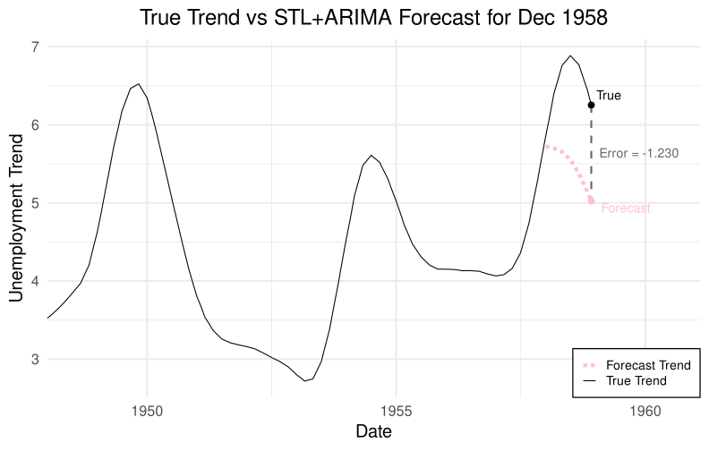

# Extract the "true trend"trend_true <- stl_full$time.series[, "trend"]
Rolling-Origin Cross-Validation Test
Define the candidate trend-forecasting models
Show the code
# ARIMA directly on trendfc_arima_trend <-function(y, h) { fit <-tryCatch(auto.arima(y), error =function(e) NULL)if (is.null(fit)) {return(rep(NA, h)) }as.numeric(forecast(fit, h = h)$mean)}# ETS on trendfc_ets_trend <-function(y, h) { fit <-tryCatch(ets(y), error =function(e) NULL)if (is.null(fit)) {return(rep(NA, h)) }as.numeric(forecast(fit, h = h)$mean)}# Local linear trend model (StructTS)fc_struct_trend <-function(y, h) { fit <-tryCatch(StructTS(y, type ="trend"), error =function(e) NULL)if (is.null(fit)) {return(rep(NA, h)) }as.numeric(forecast(fit, h = h)$mean)}
Define a function to perform the rolling-origin cross-validation for a model and return a vector of errors
Show the code
manual_cv_trend <-function(trend_ts, fc_fun, h =12, initial =60) { n <-length(trend_ts) errors <-rep(NA_real_, n) t_index <-time(trend_ts) folds <-seq(initial, n - h) pb <- progress_bar$new(format =" Trend CV [:bar] :percent ETA: :eta",total =length(folds),clear =FALSE,width =60 )for (i in folds) { pb$tick()# Training data y_train <-window(trend_ts, end = t_index[i])# Forecast h steps ahead fc <-fc_fun(y_train, h)if (all(is.na(fc))) {next }# True trend at horizon ft <- t_index[i + h] actual <-window(trend_ts, start = ft, end = ft)if (length(actual) ==0) {next }# Error errors[i + h] <- actual - fc[h] } errors}
Run the cross-validation and compute RMSE
Show the code
h <-12# 12-month ahead trend forecastinitial <-60# give the initial training window enough data to perform oktrend_models <-list(ARIMA_Trend = fc_arima_trend,ETS_Trend = fc_ets_trend,LLT_Trend = fc_struct_trend)# Running the test took about an hour on my computer,# so provide an option to save/load from disk if already runload_errors_from_disk <-TRUEtrend_errors_filename <-"trend_errors.rds"if (load_errors_from_disk &file.exists(trend_errors_filename)) { trend_errors <-readRDS(trend_errors_filename)} else {print(Sys.time()) trend_errors <-list()for (name innames(trend_models)) {cat("\nRunning trend model:", name, "\n") trend_errors[[name]] <-manual_cv_trend( trend_true, trend_models[[name]], h, initial ) }saveRDS(trend_errors, trend_errors_filename)print(Sys.time())}rmse <-function(e) { x <- e[!is.na(e)]if (length(x) ==0) {return(NA) }sqrt(mean(x^2))}trend_rmse <-sapply(trend_errors, rmse)trend_rmse
current_train_end_index <-120t_index <-time(trend_true)# Training datay_train <-window(trend_true, end = t_index[current_train_end_index])# Forecast h steps aheadfc <-fc_arima_trend(y_train, h)# True trend at horizonft <- t_index[current_train_end_index + h]actual <-window(trend_true, start = ft, end = ft)plot_end_index <- current_train_end_index + hts_to_date <-function(x, start_year, start_month =1) {# x is numeric like 1948.000, 1948.0833, ... year <-floor(x) month <-round((x - year) *12) + start_month month[month >12] <- month[month >12] -12 year[month ==1& (x -floor(x)) >0.9] <- year[ month ==1& (x -floor(x)) >0.9 ] +1as.Date(sprintf("%d-%02d-01", year, month))}true_trend_df <-data.frame(time_ts = t_index[1:plot_end_index],value =as.numeric(window(trend_true, end = t_index[plot_end_index]))) |>mutate(date =ts_to_date(time_ts, start_year =1948))forecast_trend_df <-data.frame(time_ts = t_index[(current_train_end_index +1):plot_end_index],value = fc) |>mutate(date =ts_to_date(time_ts, start_year =1948))# Extract the true value at plot_end_indextrue_point <- true_trend_df |>filter(time_ts == t_index[plot_end_index]) |>slice(1)# Extract the forecast value at plot_end_indexforecast_point <- forecast_trend_df |>filter(time_ts == t_index[plot_end_index]) |>slice(1)error_value <- forecast_point$value - true_point$valueerror_label <-sprintf("Error = %.3f", error_value)ggplot(true_trend_df, aes(date, value, color ="True Trend")) +geom_line() +theme_minimal(base_size =20) +labs(title =sprintf("True Trend vs STL+ARIMA Forecast for %s",format(true_point$date, "%b %Y") ),x ="Date",y ="Unemployment Trend" ) +# Error segment (vertical line between true and forecast values)geom_segment(data = true_point,aes(x = date,xend = date,y = value,yend = forecast_point$value ),color ="gray40",linewidth =1,linetype ="dashed",inherit.aes =FALSE ) +geom_line(data = forecast_trend_df,mapping =aes(date, value, color ="Forecast Trend"),linewidth =2,lty ="11" ) +scale_color_manual(name =NULL,values =c("True Trend"="black", "Forecast Trend"="pink") ) +theme(legend.position ="inside",legend.position.inside =c(1, 0),legend.justification =c(1, 0),legend.background =element_rect(fill ="white",color ="black",linewidth =0.6 ),legend.box.background =element_rect(fill =NA,color =NA ),legend.text =element_text(size =14),plot.title =element_text(hjust =0.5), ) +# Error numeric annotationgeom_text(data = true_point,aes(x = date,y = (value + forecast_point$value) /2,label = error_label ),hjust =-0.1,vjust =0.5,size =5,color ="gray40",inherit.aes =FALSE ) +# Add pointsgeom_point(data = true_point, aes(date, value), color ="black", size =3) +geom_point(data = forecast_point,aes(date, value),color ="pink",size =3 ) +# Add text labels slightly to the right of each pointgeom_text(data = true_point,aes(x = date, y = value, label ="True"),hjust =-0.2,vjust =-0.5,size =5,inherit.aes =FALSE ) +geom_text(data = forecast_point,aes(x = date, y = value, label ="Forecast"),color ="pink",hjust =-0.2,vjust =1.2,size =5,inherit.aes =FALSE ) +# Expand x-axis range so labels aren't croppedscale_x_date(expand =expansion(mult =c(0, 0.2)))

STL + ARIMA Trend Forecast
Forecast the next 3 years of the U.S. Unemployment Trend.
Click on the autoscale button at the top right to view the whole date range, and click the home button to zoom back in.
Show the code
# Fit ARIMA on the trendfit_trend_arima <-auto.arima(trend_true)# Forecast 36 monthsh_forecast <-36fc <-forecast(fit_trend_arima, h = h_forecast)# Build a tidy data frame for Plotlydf_hist <-data.frame(date =as.numeric(time(trend_true)),value =as.numeric(trend_true),type ="History")df_fc <-data.frame(date =as.numeric(time(fc$mean)),value =as.numeric(fc$mean),lo80 =as.numeric(fc$lower[, "80%"]),hi80 =as.numeric(fc$upper[, "80%"]),lo95 =as.numeric(fc$lower[, "95%"]),hi95 =as.numeric(fc$upper[, "95%"]),type ="Forecast")# Plotly interactive trend forecastp <-plot_ly() |># 95% CI ribbonadd_ribbons(data = df_fc,x =~date,ymin =~lo95,ymax =~hi95,fillcolor ='rgba(135,206,250,0.25)',line =list(color ='transparent'),name ="95% CI" ) |># 80% CI ribbonadd_ribbons(data = df_fc,x =~date,ymin =~lo80,ymax =~hi80,fillcolor ='rgba(135,206,250,0.45)',line =list(color ='transparent'),name ="80% CI" ) |># Historical trend lineadd_lines(data = df_hist,x =~date,y =~value,line =list(color ='black'),name ="Historical Trend" ) |># Forecast lineadd_lines(data = df_fc,x =~date,y =~value,line =list(color ='blue', dash ="dash"),name ="Forecast Trend" ) |>layout(title ="3-Year Forecast of Unemployment Trend\n(ARIMA on STL Trend)",xaxis =list(title ="Year", range =c(2019, 2029)),yaxis =list(title ="Unemployment Trend"),hovermode ="x unified",font =list(color ='black', size =20),margin =list(t =150),legend =list(x =0.7, y =1) )p